Токио · Татикава · отель
SORANO HOTEL: курорт с бассейном над парком в сорока минутах от вокзала Токио
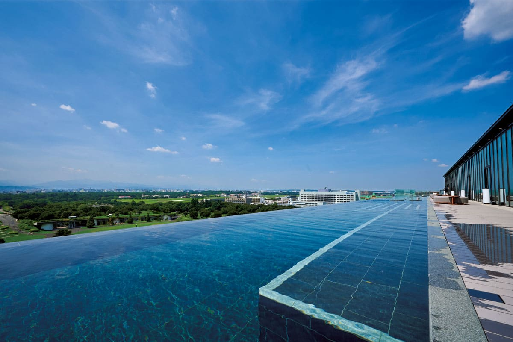
SORANO HOTEL открылся летом 2020 года в Татикаве, на западе Токио, у большого парка Сёва Кинэн. Слово «сора» по-японски значит «небо», и неба здесь действительно много: с крыши видно горы, а в ясный день и Фудзи.
Место
Небо в получасе от Синдзюку
Когда-то люди смотрели на птиц и мечтали о небе, а потом придумали самолёт. Об этом напоминает и название отеля: SORANO HOTEL строился с девизом «небо, земля и человек связаны», а главной идеей выбрал благополучие, то есть здоровую жизнь для души и тела.
Татикава лежит в зелёном пригороде Токио, но от Синдзюку сюда около 30 минут на поезде. Вокруг станции стоят такие же торговые башни, как в центре, и о тихом курорте трудно даже подумать. Однако через восемь минут пешком небо вдруг становится огромным, а город спокойным, почти загородным. Здесь начинается государственный парк Сёва Кинэн, и кажется, что это просто сад при отеле.
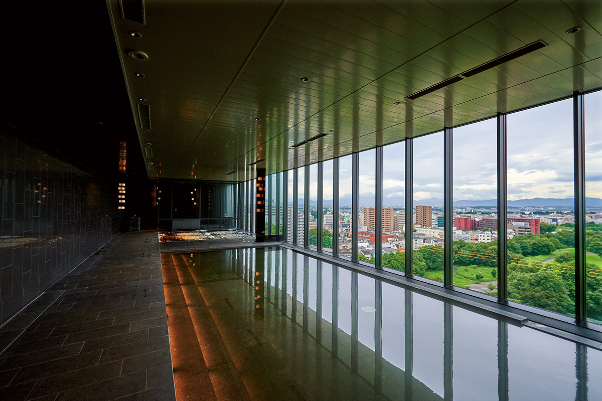
Рядом с парком вырос новый квартал GREEN SPRINGS площадью около 3,9 гектара. В его названии зелень, вода реки Тама и родники: квартал задуман как здоровое и приятное место для жизни. Здесь есть рестораны, музей, многоцелевой зал, лавки местной еды и места, где можно просто посидеть. Главное здание квартала это SORANO HOTEL, который открылся 8 июня 2020 года.
Номера
Минимум 52 метра и ничего лишнего
Забота о благополучии в отеле касается всего: оборудования, номеров, занятий для гостей, отношения персонала и еды, в основе которой японская кухня. Отель стоит вплотную к парку, и из номеров видно равнину Мусаси, район Тама, широкое небо и горы на горизонте.
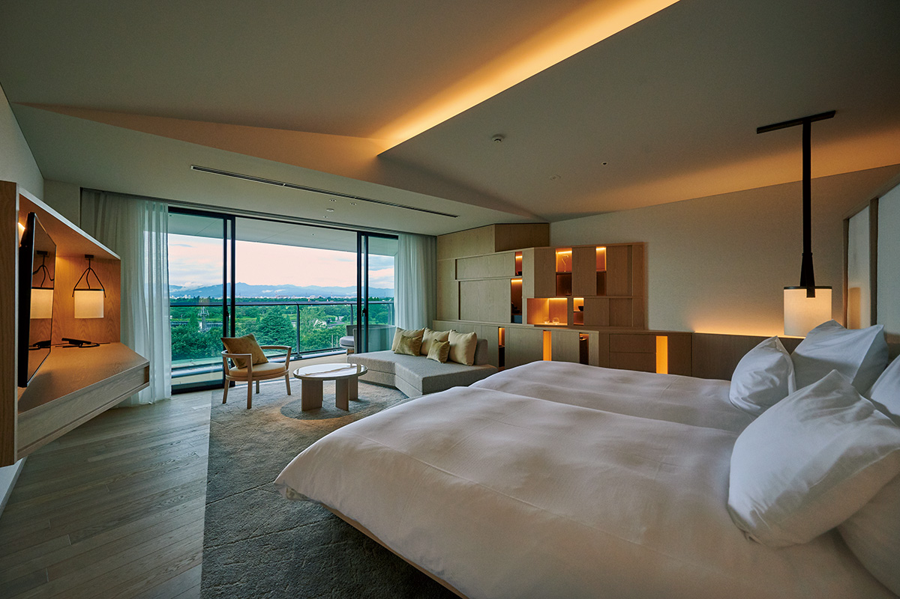
Номеров всего 81, и самый маленький из них занимает 52 квадратных метра. Выбор большой: номера, где можно жить с собакой, сюиты с мини-кухней, стандартные номера в западном или современном японском стиле, номера на четырёх гостей. И в общих залах, и в номерах нет пышных украшений, всё удивительно просто и чисто. Так работает французский дизайнер, который любит природные материалы и минимализм.
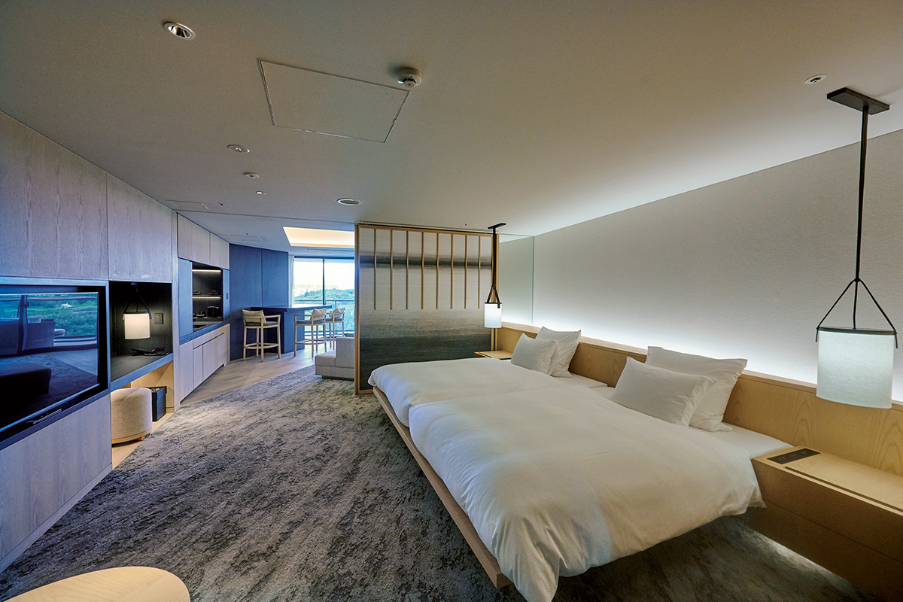
Отель продумал и мелочи. Полотенца в ванных комнатах марки Hotman: по словам операционного директора, их выбрали за то, что они отлично впитывают влагу и приятны для кожи. Компания из Омэ на западе Токио 150 лет ткёт шёлк и больше 50 лет делает полотенца, и она первой в Японии стала выпускать полотенца из хлопка «справедливой торговли».
Тапочки для отеля сделала старая фабрика гэта, обуви на деревянной подошве, а в мини-баре стоит природная вода «Фудзи но юсуй». Отель бережёт природу, поэтому одноразовых вещей в ванных нет. Зубную щётку гости привозят свою, а если забыли, могут купить бамбуковую.
Спа
Бассейн до гор и туман в сауне
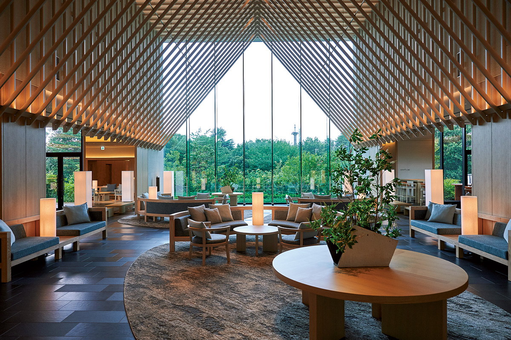
Сердце отеля это SORANO SPA на 10-м и 11-м этажах. Здесь есть крытый бассейн с термальной водой, джакузи, сауна с наноразмерным паром и тренажёрный зал. На крыше устроен бассейн инфинити, который удивляет всех: вдали видны горы, а в ясную погоду и Фудзи.
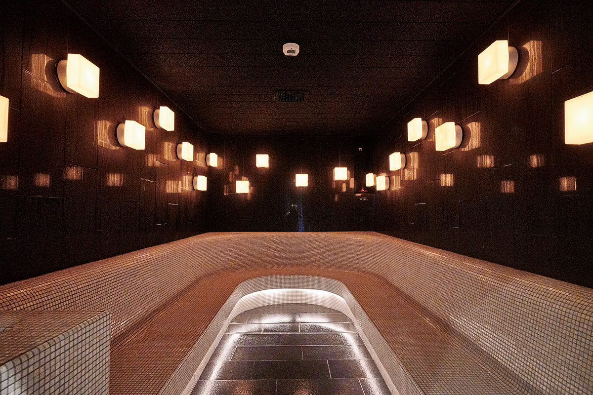
Руководитель спа, специалист по науке о здоровье, рассказывает, что здесь работают физиотерапевты, эрготерапевты, спортивные тренеры и инструкторы йоги. Задача спа в том, чтобы каждый уехал бодрым и душой, и телом. Массаж с ароматическими маслами обычно делают прямо в номере, и терапевт подбирает процедуру под гостя: от усталости или для красоты.
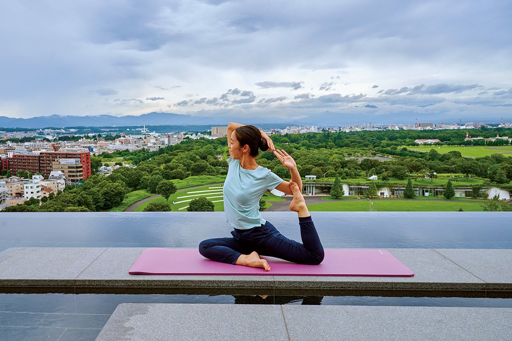
В тренажёрном зале есть программа восстановления формы с подробной консультацией о состоянии тела. Для гостей работают два лаунжа: IMA LOUNGE на этаже холла и INFINITY LOUNGE для тех, кто пользуется бассейном на крыше. Тем, кто остаётся на несколько дней, отель советует съездить в горы на западе Токио: на экскурсию на сакэварню, на крашение индиго или подняться на гору Такао.
Еда
Японская кухня без границ
В DAICHINO RESTAURANT готовят «японскую кросс-овер кухню»: основа японская, а мысль свободная. Шеф-повар выбирает продукты, выращенные там, где им лучше всего расти, и все блюда можно брать по меню порциями. Для чая, кофе и готовки здесь берут ту же сверхмягкую воду «Фудзи но юсуй», что стоит в номерах: в отеле считают, что здоровье начинается с хорошей воды.
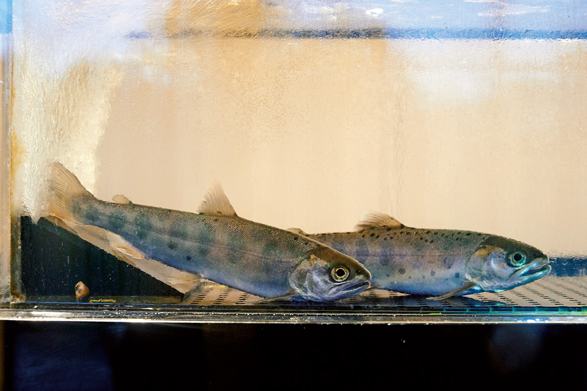
Ужин начинается с чашки первого бульона даси из тунца кацуобуси и водоросли комбу: он согревает и готовит к еде. Дальше выбирают блюда. Карпаччо из осьминога с салатом из оливок, томатов и перца и рыбным соусом с лаймом стоило в 2020 году 1800 иен.
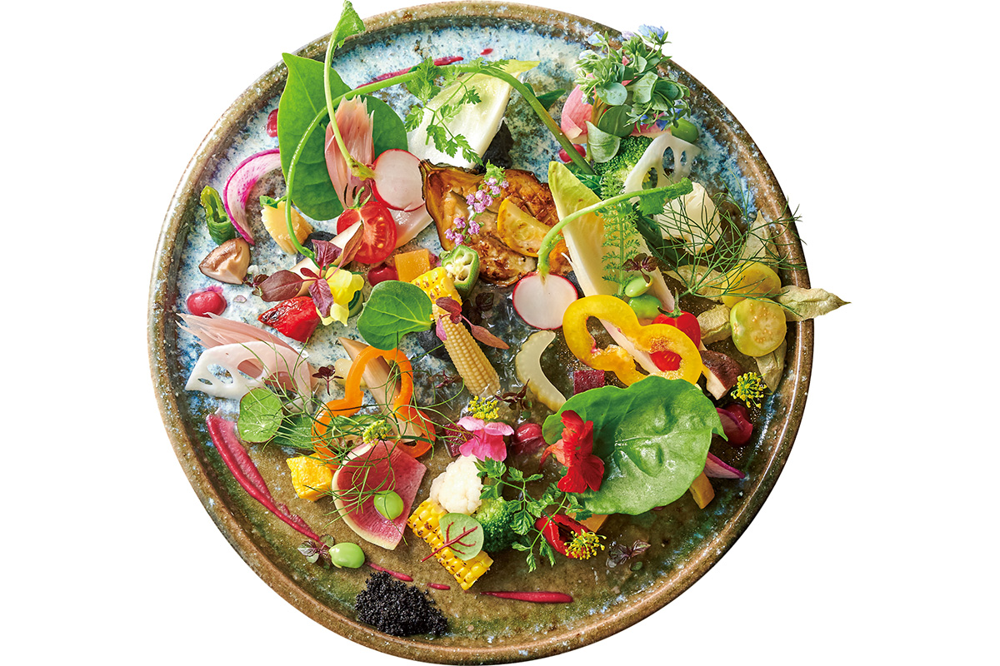
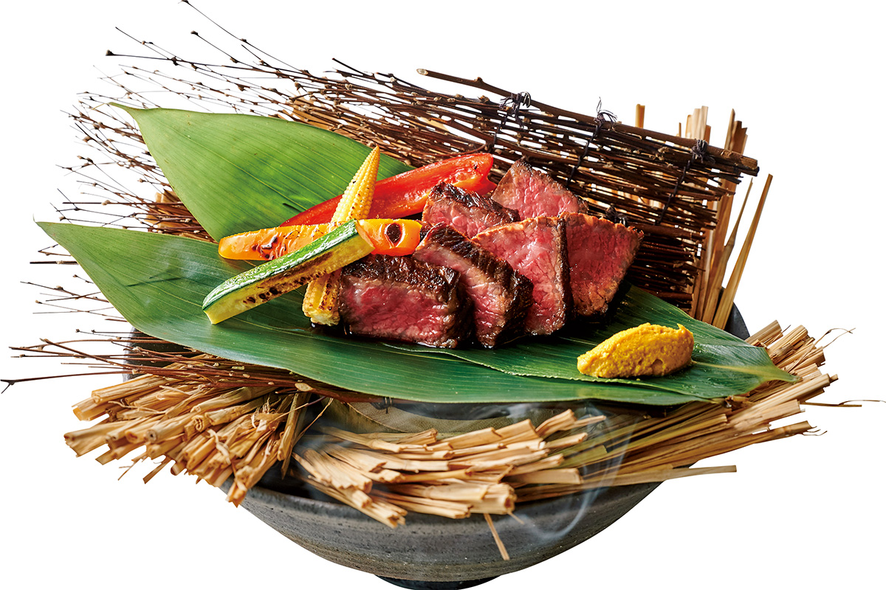
В японской традиции есть «харэ», праздник, и «кэ», обычные дни. Отель перенёс эту мысль на завтрак. Завтрак «кэ» это простая здоровая еда по правилу «один суп и три блюда». Завтрак «харэ» подают на подносе из шести маленьких праздничных блюд.
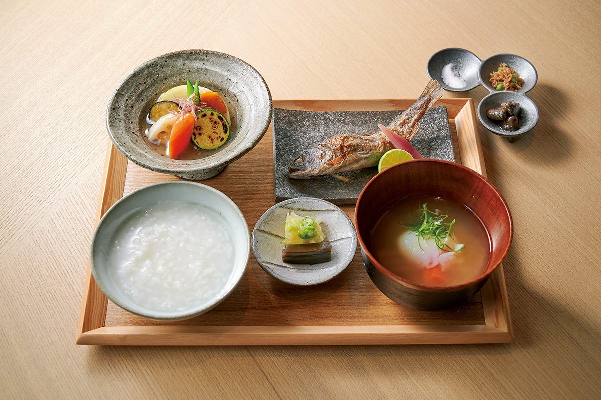
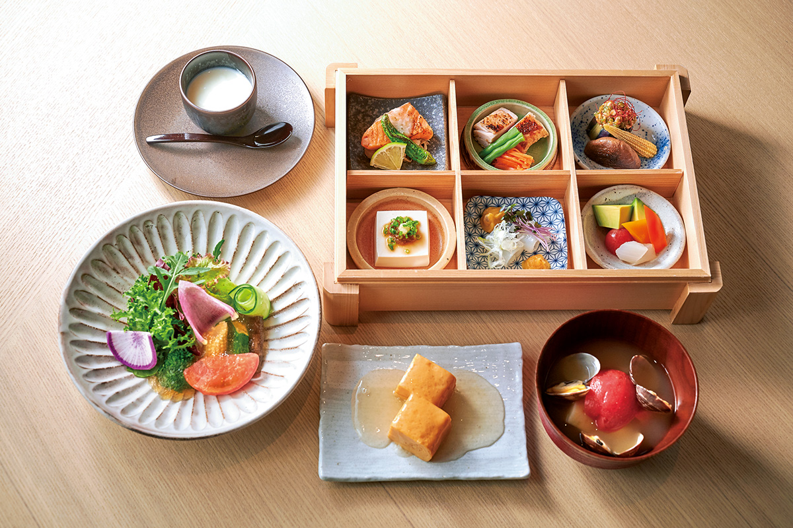
Отель недалеко от центра, и сюда едут и поработать на удалёнке, и просто сменить обстановку на выходных.
SORANO HOTEL
- Адрес
- Токио, Татикава, Мидори-тё, 3-1 W1
- Телефон
- +81 42-540-7776 (бронирование 9:00–19:00)
- Номера
- 81
- Цены / Вход
- от 39 480 иен за номер в сутки без налога (план к открытию, 2020)
- Заезд / выезд
- 15:00 / 12:00
- Как добраться
- от северного выхода станции JR Татикава 8 минут пешком; на машине от съезда Кунитати-Футю скоростной дороги Тюо около 30 минут
- Сайт
- soranohotel.com
Фото: Хироси Абэ.